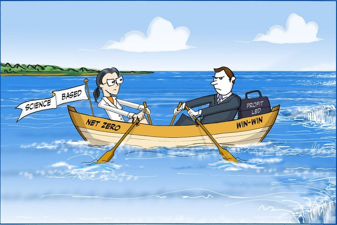
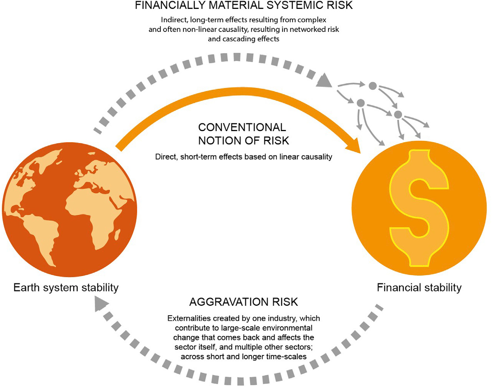
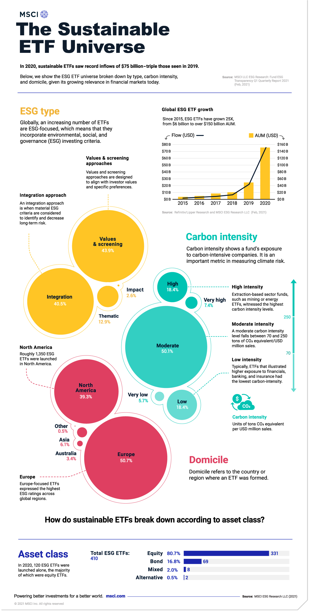

3 ESG
ESG = Extra Strong Greenwashing
3.1 Win-Win
Austin
It has been increasingly clear that our predominant response to the sustainability crisis over the last 3 decades – the voluntary market-based approach of ESG, ‘impact investing’ and sustainable business in general – has not been able to bend environmental trajectories as much as hoped. This inevitable clash of sustainability interpretations now forces the ESG community into a difficult, but potentially catalysing, reflection of two fundamental issues: (i) the credibility of its ‘win-win’ narrative and (ii) the sustainability of ‘economic growth’.

The challenge for the sustainable business community is that, as a market-based movement, it has generally not questioned ‘economic growth’. Sustainable business certainly espouses a preference for green growth, but that merely reinforces growth-favouring norms, with the consequence of waving through mostly non-green growth, at a time when environmental buffers are diminishing.
We are missing the physics for the finance. A major cause of our sustainability problems is that the economic values we steer by are so decontextualised from the underlying natural world that a core aspect of the sustainability challenge is to see through the blindness that economic and financial conventions induce.
Our ecological problems are rooted in matter and energy flows not financial flows. Our situation has arisen because we have transformed the matter and energy of the world at a much faster rate than the natural world can absorb. Given the entropic toll of every transformation, it is our underexamined urge to keep transforming – even with good intention – that is the core driver of our ecological crisis. But, in what sustainability researcher Pasi Heikkurinen has termed our ‘transformation paradox’, our instinctive response to problems caused by past excess transformation of the world’s matter and energy is to keep transforming! Our increasingly urgent ambition to build a green economy masks the deeper point that we remain firmly upon a transformation treadmill. We say ‘greener’, the Earth just registers ‘more’.
In races against time, possibly the most precious commodity is more time. How can we buy time for our sustainability crisis? By slowing down those parts of the economy making no contribution to a greener future economy.
Critically, the de-growth or post-growth that advocates have in mind is not the sporadic recessions that upset our prevailing growth mindset, but rather an intentional, radical transformation and re-conception of prosperity and welfare, complete with transitional justice.
[Austin (2021) From Win-Win to Net-Zero](https://www.responsible-investor.com/articles/from-win-win-to-net-zero-would-the-real-sustainability-please-stand-up9 (pdf full)
3.2 Externalities Risks
Crona
Globally, financial services are well positioned to contribute to the transformation needed for sustainable fu- tures and will be critical for supporting corporate activities that regenerate and promote biosphere resilience as a key strategy to confront the new risk landscape of the Anthropocene. While current financial risk frame- works focus primarily on financial materiality and risks to the financial sector, failure to account for invest- ment externalities will aggravate climate and other environmental change and set current sustainable finance initiatives off course. This article unpacks the cognitive disconnect in financial risk frameworks between envi- ronmental and financial risk. Through analysis of environmental, social, and governance ratings and esti- mates of global green investments, we exemplify how the cognitive disconnect around risk plays out in practice. We discuss what this means for the ability of society at large, and finance in particular, to deliver on sustainability ambitions and global goals.

Global issuance of green bonds recently surpassed $250 billion, representing ca. 3.5% of total global bond issuance ($7.15 trillion)
The multiple, often complex, mechanisms by which environmental change un- folds and is aggravated by investments are not equally recognized.
Climate, biodiversity loss, water, and land-use change are not isolated phenomena, but directly interconnected and mutually reinforcing processes.
For example, deforestation to produce oilseed in one region leads to regional drought affecting the oilseed production itself, but also affecting geographically distant sectors, such as aquaculture reliant on oilseed for feed input.
Failure to see these connections matters. If they are not recog- nized in risk assessment tools, strategies, and solutions used to address the problem, these will deliver only partial results.
Most detrimental risks of climate change on portfolios may very well arise from second-order effects.
This article contrasts widespread conceptions of climate- related financial risks (such as those of the Taskforce on Climate-Related Financial Disclosures [TCFD]) with insights from Earth system science, to highlight the disconnect between environmental and financial risk in prominent financial risk frame- works. We show the necessity of a broader conceptualization of climate and environmental risk to avoid devastating impacts on the economy, society, and biosphere as a whole. We then use environmental, social, and governance (ESG) investments as a means to exemplify how the cognitive disconnect plays out in practice and its implications for the ability for society at large, and finance in particular, to deliver on sustainability ambitions and global goals.
Multiple sources of scientific evidence show that a stable climate is determined not just by GHG emissions, but by a com- plex set of interactions between human activities and large-scale biological, geological, and physical processes related to, e.g., forest and land-use dynamics, global hydrological flows, and radiative forcing.
Climate stability hinges not just on the atmosphere.
Financial risk frameworks explicitly aimed at incorporating climate systemic risk (e.g., Aglietta and Espagne) 40 fail to recognize that propagation mechanisms can also be linked to interconnections between Earth system processes. They consider merely social and economic elements.
Many disasters have happened because of a failure to imagine that they were possible and therefore to build insurance to be prepared.
The exceptional development in risk definitions in the financial sector over the past 3 decades. A similar trend is supported by the shifting focus of risk discussions in the annual reports by the World Economic Forum. 55 This rapid development in the definition of financially relevant risks shows that a shift to also consider aggravation risk is possible
alfa and beta only
Managing investment risk hinges on diversifica- tion. Conventional portfolio risk management is limited to diver- sifying idiosyncratic risk (managing alpha) by selecting securities across different financial assets. It further assumes that this diversification has no influence on market-wide issues that could affect multiple asset classes (beta).
The assumption—that systemic risks affect investments, but are not affected by these same investments—is the single biggest theoretical failing of modern portfolio theory.
For large institutional investors and so-called ‘‘universal owners,’’ with highly diversified and long-term portfolios repre- sentative of entire capital markets, climate change has already been recognized as a key driver of future value and not an exter- nality.
Coalitions have therefore emerged to rally this highly concentrated segment of the financial sector into action (see, e.g., Climate 100+, with over 500 investors as signatories and more than US$47 trillion in assets under management), yet to date these remain focused only on shifting away from fossil fuels and do not consider the interconnected dynamics between eco- nomic activity, Earth system dynamics, and biosphere resilience.
A 7-fold increase in claimed losses (from $50 billion in 1980 to $350 billion in 2017).
Crisis of insurablility
As climate change-related risks, such as storms, fires, and sea-level rise, all mount and occur simultaneously, the sheer vol- ume of material assets affected and the multiple types of liabil- ities incurred threaten to trigger a crisis of insurability.
Climate change will affect many sectors simultaneously in the future. As such it will affect financial institutions by reducing their capacity to diversify.
Most financial risk assessment still relies on historical data, and would underestimate or completely miss the potential for thresholds and cascading ef- fects not previously experienced.
ESG frameworks are a good example of how the cognitive disconnect plays out in practice. ESG refers to a collection of often divergent approaches to using non-financial data for socially responsible investment strategies. ESG grew out of a socially responsible investment movement emerging as early as the 1960s, and early versions were motivated by a belief in sustainable development, adopted a systems view, and focused on capturing absolute assessments of corporate externalities. However, as the interest in ESG issues rose in the wake of the 2004 UN Global Compact report, the financial materiality-driven rationale was favored by the major rating providers (such as MSCI). According to Eccles et al., this was because such an approach was easier to scale, was most closely aligned with investor needs for finan- cially focused assessments, and also arguably did not challenge investors to reflect on more complex externalities. This way of conceptualizing ESG issues now dominates sus- tainability approaches adopted by prominent norm-setting actors such as the SASB, the TCFD, and the limited set of ESG providers that hold the majority of market shares in the highly concentrated market segment of ESG rating services.
Current ESG ratings are based on a risk perception that does not account for externalities, and therefore is unlikely to address the root causes undermining sustainability.
Divergence in ESG ratings has spurred debates about what reliably constitutes a sustainable investee, as it prevents comparison of the performance of ESG investments.
It runs an acute risk of developing sustainability strategies that are off the mark.
In systems science it is well established that thresholds in systems are easily overshot when feedback has long delays, leading to collapse.
Since shortening the time lag of how the Earth system operates is not possible, two things will be key to achieve a financial system that fundamentally promotes long-term sustainability: (1) incorporating the necessary information feedback and (2) developing structures by which this information is taken into account and acted upon. The two cannot be treated in isolation
In 2019 only 14% of total global investments were linked to any form of ‘‘green’’ label. While ‘‘green’’ or ‘‘sustainability’’-linked loans and bonds have experienced significant growth, they represented less than 0.5% of total debt issued.
(32%) of the $95 trillion of total equity in 2019 were ‘‘green.’’
The bulk of green equity investments are in shares of listed companies that were deemed to be associated with any of the following procedures: positive, negative, or norm-based screening; any type of ESG integration; sustain- ability-themed (impact) investment; or engagement and shareholder action. 85 Taken together these stretch ‘‘sustain- able investments’’ to include a vast array of investment stra- tegies with arguably very different capacities to achieve sus- tainable outcomes.
As long as central banks continue to conceptualize prudential regulations as “blunt instruments for dealing with climate-related externalities,” and maintain that “adapting capital requirements to reflect externalities could undermine their primary purpose, or give rise to undesirable effects,” it is questionable whether these efforts can become little more than a rearranging of the proverbial deck chairs of the ill-fated Titanic.
Mainstream approaches for delivering on sustainability ambitions (such as ESG) are on a trajectory that is currently off the mark.
Refining ESG metrics without incorporating measures of impact will increase precision, but fail to address accuracy.
Today, unintelligent accountability appears to be rising in the financial sector, as a result of misalignment between sustainability ambitions and current risk frameworks and risk assessment measurements. This hampers the crucial role finance can and needs to play.
Our analysis has highlighted three key actions that will sup- port the financial sector in bridging this gap: (1) recognizing a wider set of Earth system processes (including the climate and hydrological flows in addition to GHGs); (2) acknowledging that current risk frameworks lack an acknowledgment of the risk of aggravating climate and large-scale environmental change through investments; and (3) moving to develop impact accounting systems that cut across all financial investments and become a core part of capital allocation decisions. Doing this will require forging new alliances between science and finance, but also new transdisciplinary research to assist finance in developing risk management tools to better address the Anthropocene reality and ensure that the development of impact accounting is grounded in both social and environ- mental sustainability science.
Memo DH:
Giving up on Governments, appealing to financeCrona (2021) The Anthropocene reality of financial risk (pdf) (pdf SI) Alt link: One Earth
3.3 Climate Impact Management System
2i Investing
Recently, there has been a surge in financial sector initiatives focused on climate-related targets or strategies, with a number of big industry names making Net-Zero targets in the past few months alone.
However, some commitments have centered on targets that are decades away, with little clarity on the near-term actions that will be undertaken to meet these targets. Additionally, there has been limited focus on understanding how these kinds of initiatives will contribute to impact – that is, greenhouse gas emissions reductions – in the real economy (see our previous report, On the Road to Paris).
The Climate Impact Management System aims to fill this gap, by providing FIs with a clear roadmap to develop, refine, and communicate on impactful climate strategies. The system was developed by 2DII’s Evidence for Impact Program and the French Ecological Transition Agency (ADEME), as part of the Finance ClimAct project.
3.4 ETF Universe
VisualCapitalist
Globally, sustainable exchange-traded fund (ETF) assets hit $150 billion last year, vaulting 25 times higher than in 2015.
Yet despite this growth, sustainable ETFs—baskets of investments that focus on environmental, social and governance issues—account for roughly 5% of the entire ETF universe.
